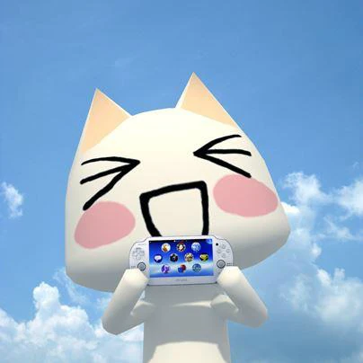

!!!$??
Toro Inoue (井上トロ), colloquially known as the Sony Cat, is the main character of the Doko Demo Issyo series, and the unofficial mascot of Sony Interactive Entertainment, most prominently in Japan.
He is a white bobtailed cat Pokepi, known for having many distinct expressions and a tendency to dress up in various costumes.
Toro's wish is to become human, a goal he has seeked in almost every game he has appeared in. He has tried many methods in an attempt to become human, his most diligently chased one is by learning human words; he believes that he can become human in this manner, since he feels he needs to know what to say once he becomes human.
wiki fandom
to hist.
to toro persona.
hist
Toro first appeared as one of the five Pokepi in the original Doko Demo Issyo game, which was released in Japan on the PlayStation in July 22, 1999. He was most prominently featured in the game's marketing, and its success saw him become a mascot for the PlayStation brand. As a result, he receives more focus in later entries of the series, serving as a main protagonist in more story-driven games.
the PlayStation 3 era, Toro began finding more overseas fans through Mainichi Issho (Everyday Together) being a popular import download among those with Japanese PlayStation Network accounts. After Mainichi Issho's discontinuation in 2009, Toro migrated to Weekly Toro Station, which ran until 2013.
Toro has remained mostly an icon of the East; until recently, Doko Demo Issyo, and in extension Toro and his friends, has mostly evaded localization. Most of his appearances outside Japan consist of the numerous cameos he has made in many games primarily on Sony consoles, as a testament to his status as a mascot.
When Toro was just a kitten, his parents had already passed away and he was left abandoned in a cardboard box. When no one would give him shelter, he ran away and wandered into an abandoned apartment, where he meets a human and begins to live with them. During this time he believed he was a human, and wanted to go to school and make friends. However, he eventually learned the nature of his existence as a cat and ran away again, becoming obsessed with the idea of becoming a human. He was eventually taken in by the elderly owner of a sushi restaurant, and was named Toro Inoue, after his favorite kind of sushi. Unfortunately, the owner passes away too soon afterward, and Toro is alone again. Toro then wanders, in search of making his dream of becoming a human come true.
to hist.
toro persona!!!
Toro's most dominant personality trait is his innocent, child-like demeanor, despite being an adult; he is very curious and wants to learn as much as he can.
He's not one to shy away from uncomfortable questions (mature topics in particular are an interest of his) as he sees knowing more about human things will help him become human.
He is also extremely naive like a child, which results in him being gullible as well. He becomes scared very easily, and tends to have irrational fears. Toro also is a crybaby and gets depressed easily, and he tends to cry a lot when upset. Despite this, Toro overall has a very optimistic outlook on life, even if his desires are seemingly impossible to obtain he never gives up.
1. Birthday May 6th
2. Gender Male; Genderless in Japanese media
3. Blood Type A
4. HeighT 120cm (approx. 3'11")
5. Weight 25kg (approx 55.1lbs)
6. Favorite Food Chūtoro, Oratosquilla oratoria, nattō roll
7. Likes Being pampered, his caretakers, helping others
8. Dislikes Being put into cardboard boxes, being alone, ghosts
to toro persona.
Этот абзац является целью для ссылки "to toro persona."

×

Подпись к изображению
К началу